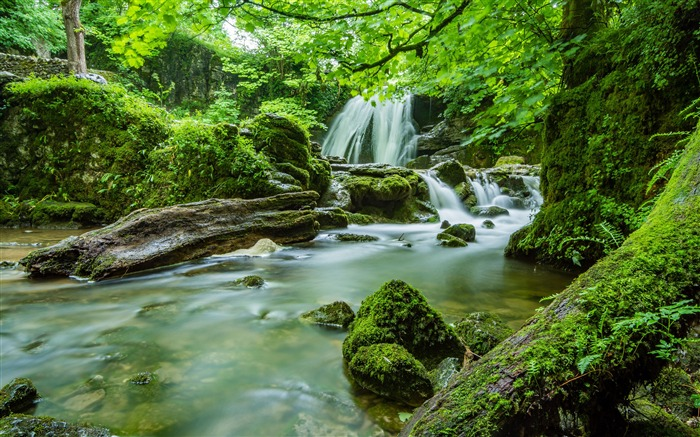
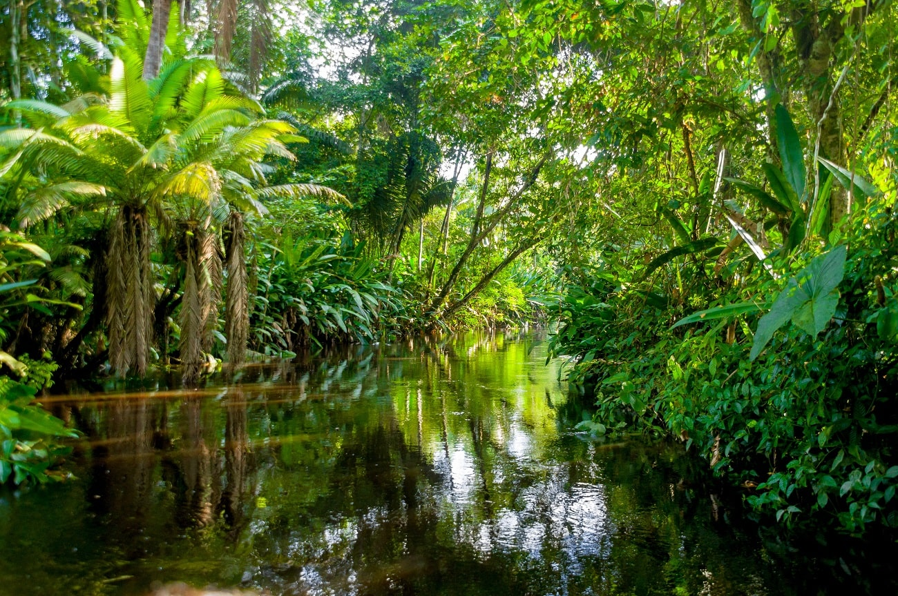

Debido a su ubicación geográfica y a su diverso relieve, México tiene una gran diversidad de ecosistemas, que van desde lo más alto de las montañas hasta los mares profundos, pasando por desiertos y arrecifes de coral, bosques nublados y lagunas costeras. Los ecosistemas son el hogar de numerosos seres vivos, donde conviven y se relacionan entre sí y con factores no vivos, que son los que forman el ambiente, el clima, las temperaturas, las sustancias químicas o las características geológicas del territorio.
Son las comunidades vegetales más exuberantes del país, están formadas por árboles de hasta 30 m o más de alto, de muy diversas especies y que conservan su follaje todo el año. Además abundan las lianas, epífitas y palmas. Algunos árboles tienen troncos rectos con raíces tubulares con contrafuertes. La mayoría de los árboles tienen hojas grandes y duras. Se distribuyen en climas cálidos y húmedos. Son ecosistemas muy complejos con alta variación de especies de un lugar a otro.Originalmente ocupaban una extensión de cerca del 9.2% de la República Mexicana que se ha reducido a 4.7% (91, 566 km²). .
Son comunidades dominadas por árboles altos mayormente pinos y encinos acompañados por otras varias especies habitan en zonas montañosas con clima templado a frío. México contiene el 50% (50 especies) de especies de pinos del mundo y cerca del 33% (200 especies) de encinos. Se estima que los bosques templados contienen cerca de 7,000 especies de plantas. A pesar de que la mezcla de especies puede variar entre uno o varios pinos y algunos encinos, son comunidades siempre verdes. Existen otras variantes donde dominan algunas otras coníferas, como los bosques de oyamel, los de ayarín o pinabete y otros.
Los manglares son una formación vegetal leñosa, densa, arbórea o arbustiva de 1 a 30 metros de altura, compuesta de una o varias especies de mangle y con poca presencia de especies herbáceas y enredaderas. En México predominan cuatro especies de mangle (Rhizophora mangle, Laguncularia racemosa, Avicennia germinans y Conocarpus erectus). Aunque existen dos especies más (Avicennia bicolor y Rhizophora harrisonii) con una distribución restringida en el estado de Chiapas y una variedad de C. erectus (C. erectus var. sericeus). Estas especies se pueden encontrar formando asociaciones vegetales o en bosques monoespecíficos.

Los ríos y arroyos son sistemas de agua con movimiento constante unidireccional sobre la superficie terrestre. Se reabastecen de agua con la precipitación y los escurrimientos superficiales, los mantos freáticos y el deshielo de las altas montañas. Forman parte del ciclo hidrológico. Por su parte, los lagos y lagunas (incluyendo presas y bordos) son sistemas con poco movimiento que se abastecen de arroyos, ríos y mantos freáticos. México cuenta con cerca de dos millones de kilómetros cuadrados de superficie terrestre y dentro de ellos alberga 320 cuencas hidrográficas, 50 ríos principales, numerosos tributarios, riachuelos y arroyos permanentes o intermitentes, además de los ecosistemas lénticos (humedales, lagos y lagunas) (Aguilar 2003, Torres Orozco 2011).

Comunidad marina de aguas poco profundas cercanas a la costa, dominada por comunidades coralinas y estructuras rocosas, con una gran diversidad de especies de algas, invertebrados y peces. Pueden ser coralinos, rocosos, mixtos y artificiales. Los arrecifes están cercanamente ligados con otros ecosistemas, ya que estas grandes estructuras coralinas o rocosas, cambian la dirección y velocidad de las corrientes marinas y ayudan en el establecimiento de otros ecosistemas costeros como manglares y pastos marinos. Entre estos ecosistemas existe una relación muy importante donde organismos juveniles de peces e invertebrados de diferentes especies pasan su periodo de larva y juvenil en zonas de manglares y pastos marinos. Una vez que llegan a la etapa adulta, migran a los arrecifes en donde se reproducen y liberan sus huevecillos. Pocas horas después las pequeñas larvas harán su viaje a los manglares y pastos en donde crecerán hasta alcanzar el tamaño necesario para poder regresar al arrecife y el ciclo vuelve a repetirse.